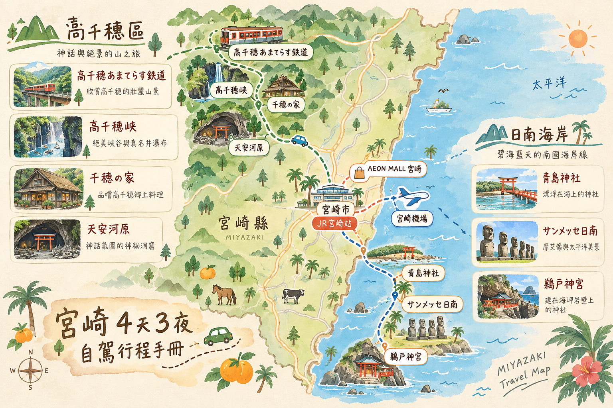

去程・TPE → KMI2026 / 10 / 09
TPE
台北桃園國際機場
✈直飛
KMI
宮崎機場
FLIGHT
IT742
DEPARTURE
06:20
ARRIVAL
09:20
DURATION
約 2h 00m
起飛時間為台灣時間；抵達時間為日本時間（日本快 1 小時）。
虎航班機直飛宮崎，一路從高千穗的山霧峽谷開到日南海岸的夕陽神社。這份手冊收錄逐日行程、租車與停車細節、高千穗小火車時刻表，以及行前清單，方便全家四人隨時查閱。
目的地宮崎，4 天 3 夜，走山線的高千穗與海線的日南海岸，全程自駕代步。
綠色代表高千穗山區行程，藍色代表日南海岸行程，灰色為機場移動日。點選切換每一天。
南九州的重要空中門戶，機場充滿宮崎神話與南國植物意象；抵達後可先感受宮崎特有的悠閒南國氣氛。
取 Nissan Serena 展開四天自駕；七人座 MPV 空間適合四人與大型行李，記得確認 ETC 卡與車況。
靠近日南海岸的海鮮料理店，主打龍蝦與海鮮定食；第一餐直接用宮崎海味開場。
JR 九州ホテル宮崎館內早餐，以宮崎為中心使用九州七縣食材，適合想輕鬆慢慢吃完再出發的一組。
早餐行程在 JR 九州ホテル宮崎匯流，四人集合後沿海岸公路一路往南，正式進入日南海岸線。
七尊 Ahu Akivi 摩艾復刻像面向太平洋，是園區最具辨識度的景觀；山坡視野也能一次看完整片日南海岸。
最後一晚自由收尾，回 JR 九州ホテル宮崎整理行李與戰利品，準備隔日上午還車返台。
最後確認護照、行李與伴手禮，從宮崎車站周邊出發前往機場。
還車前加滿油並保留單據，完成車況確認後前往航廈辦理登機。
從宮崎直飛桃園，結束四天三夜的高千穗山線與日南海岸自駕旅程。
三晚都住同一間，緊鄰宮崎車站西口，飯店後方即為立體停車場，取還車與逛街都方便。
全程自駕以 Nissan Serena 代步，重點行程是 Day2 的高千穗峽及 Day3 的日南海岸。
營運時間 09:40－15:40，每日固定班次，約 40 分鐘一班；每月第 3 個週四公休（10/10 為週六，正常營運）。往返車程約 30 分鐘。
以「景點分區資訊圖 × 手繪旅遊地圖」重新整理山線與海線。這張圖用來快速建立方位感，實際導航入口已移到每個行程節點右側。

＊路線圖採手繪旅遊插畫風格，重點呈現高千穗山線、宮崎市區與日南海岸的相對方向；實際導航請直接使用上方每日行程節點右側的 MAP 圖示。
點擊即可勾選，離開頁面後清單會重新歸零，適合出發前當天再過一次。
每筆可記錄付款人、分攤對象與付款方式；系統會自動算個人實際支出、平均分攤，以及最後誰該付誰多少錢。
現金以臺灣銀行「日圓現金賣出」為準；刷卡可選 Visa／Mastercard／JCB。因本頁是單一離線 HTML，官方網站通常禁止跨網域自動讀取，所以保留官方查詢入口＋可手動更新的匯率欄位；每筆支出會記住當下使用的匯率，不會因日後改匯率而被重算。
| 日期 | 分類 | 項目 | 付款人 | 分攤 | 付款方式 | 原幣金額 | 匯率 | 換算 TWD | 同步 |
|---|
＊資料會先保存在目前瀏覽器的 localStorage；設定 Apps Script Web App URL 後，每筆新增會等待 Apps Script 回傳成功後才標示「已同步」；若同步失敗，帳目仍會保存在目前瀏覽器並可稍後重試。若舊版曾誤標為已送出，可按「強制重送全部帳目」；Sheet 端會依同步 ID 去除重複。刷卡最終入帳匯率仍取決於卡組織處理／清算日期、發卡銀行海外交易手續費與是否使用 DCC；此處適合旅行中估算與分帳，收到帳單後可再把該筆匯率改成實際入帳值。